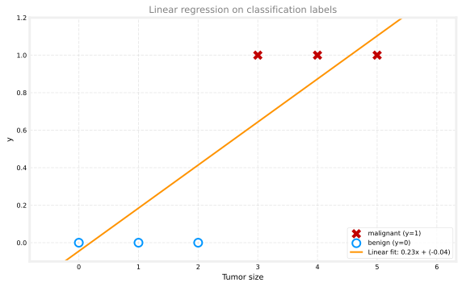
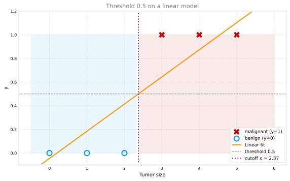
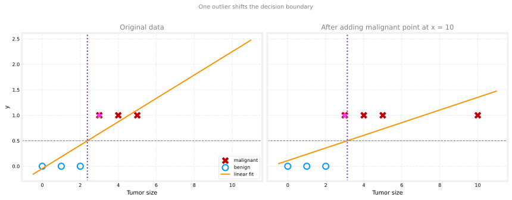
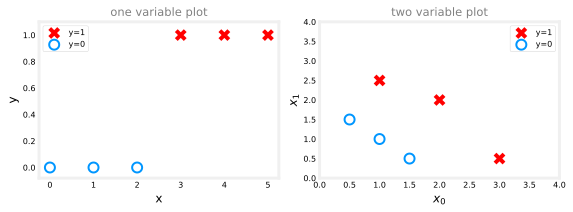

import numpy as np
# Tumor size (cm) vs malignant/benign label
x_train = np.array([0.0, 1, 2, 3, 4, 5])
y_train = np.array([0, 0, 0, 1, 1, 1])Classification
machine-learning
supervised-learning
classification
Last week you learned linear regression, which predicts a number. This week introduces classification, where the output can take on only one of a small…
Last week you learned linear regression, which predicts a number. This week introduces classification, where the output \(y\) can take on only one of a small handful of possible values instead of any number in an infinite range.
Linear regression is not a good algorithm for classification problems. Understanding why leads directly to logistic regression, one of the most widely used learning algorithms today.
Review Questions
1. What is the main difference between regression and classification outputs?
TipAnswer
Regression predicts a number from a large or infinite set of values. Classification predicts a category from a small, finite set of labels.
Classification Examples
Recall examples from supervised learning:
- Spam filtering: is this email spam? Output: no or yes.
- Fraud detection: is this online transaction fraudulent (for example, a stolen credit card)? Output: no or yes.
- Medical diagnosis: is this tumor malignant? Output: no or yes.
In each case, the variable you want to predict has only two possible outcomes. That is binary classification: the word binary means there are only two classes or categories.
Review Questions
1. Is predicting whether an email is spam regression or classification?
TipAnswer
Classification. The output is a category (spam or not spam), not a continuous number.
Labels for Binary Classification
In these problems, class and category mean basically the same thing. By convention, the two classes are often written as:
| Convention | Negative class | Positive class |
|---|---|---|
| Words | no | yes |
| Boolean | false | true |
| Numeric | 0 | 1 |
In code and formulas, this course usually uses 0 and 1 because that fits cleanly with the algorithms you will implement. In prose, we still say no/yes or benign/malignant when that reads more naturally.
Negative and Positive Class
Another common convention:
- Negative class: false or 0 (for example, not spam, not fraudulent, benign tumor)
- Positive class: true or 1 (spam present, fraud present, malignant tumor)
Negative and positive do not necessarily mean bad versus good. They convey absence (0, false) versus presence (1, true) of the property you are detecting.
Which class is 0 and which is 1 is sometimes arbitrary. One engineer might call a legitimate email the positive class; another might swap the labels. Either choice can work if you are consistent.
Review Questions
1. In spam detection, why might a non-spam email be called a “negative” example?
TipAnswer
The answer to “is it spam?” is no (0). Negative here means the property you are looking for (spam) is absent, not that the email is bad.
1. Why does this course often use 0 and 1 for class labels in code?
TipAnswer
Numeric 0/1 labels align with the math and Python arrays used in classification algorithms, while still mapping cleanly to no/yes in applications.
Tumor Size: A First Attempt with Linear Regression
How do you build a classification algorithm? Start with a training set for malignant versus benign tumors. Plot tumor size on the horizontal axis and label \(y\) on the vertical axis (0 or 1).
One approach is to apply what you already know: fit a straight line with linear regression so \(f_{w,b}(x) = wx + b\).

Linear regression does not only output 0 and 1. It predicts any real number, including values below 0 or above 1. That is already a hint that something is mismatched.
Review Questions
1. Can \(f_{w,b}(x) = wx + b\) always return only 0 or 1?
TipAnswer
No. A linear function can return any real value. Classification needs discrete class labels, not an unbounded number line.
Threshold at 0.5
One workaround is to pick a threshold, such as 0.5:
- If \(f_{w,b}(x) < 0.5\), predict \(y = 0\) (benign)
- If \(f_{w,b}(x) \ge 0.5\), predict \(y = 1\) (malignant)
The threshold marks a decision boundary: tumors smaller than the cutoff are classified one way; larger ones the other way.

On this small data set, the threshold can look reasonable. The problem appears when you add one more training example.
Review Questions
1. If \(f_{w,b}(3) = 0.64\), what class do you predict with a 0.5 threshold?
TipAnswer
\(y = 1\) (malignant), because \(0.64 \ge 0.5\).
Why Linear Regression Fails for Classification
Add one more malignant example far to the right (large tumor size). That point should not change how you classify typical tumors. The old vertical cutoff still makes sense.
But the best-fit line shifts. With the same 0.5 threshold, the decision boundary moves right, and a tumor at size 3 can flip from malignant to benign.
x_out = np.append(x_train, 10.0)
y_out = np.append(y_train, 1)
w_bad, b_bad = fit_linear_gd(x_out, y_out)
thr_bad = (0.5 - b_bad) / w_bad
print(f"Without outlier: threshold x ≈ {(0.5 - b_lr) / w_lr:.2f}, f(3) ≈ {w_lr * 3 + b_lr:.2f}")
print(f"With outlier: threshold x ≈ {thr_bad:.2f}, f(3) ≈ {w_bad * 3 + b_bad:.2f}")Without outlier: threshold x ≈ 2.37, f(3) ≈ 0.64
With outlier: threshold x ≈ 3.13, f(3) ≈ 0.48
Large tumors should stay malignant. Linear regression lets a single far-away point drag the line and the cutoff enough to misclassify mid-size tumors. That is why Andrew Ng does not recommend linear regression for classification.
Review Questions
1. After adding a malignant point at very large size, why can a tumor at \(x = 3\) be misclassified?
TipAnswer
The fitted line rotates downward to fit the outlier. The 0.5 threshold crossing moves right, and \(f_{w,b}(3)\) can drop below 0.5 even though the label at \(x = 3\) is still malignant.
Logistic Regression Preview
You will learn more about the decision boundary in the next section. The fix is logistic regression: the model output is always between 0 and 1, so it behaves like a probability of the positive class and avoids the wild extrapolation of a straight line.
One confusing detail: despite the word regression in the name, logistic regression is used for classification (historical naming). It targets binary labels \(y \in \{0, 1\}\).
Review Questions
1. True or false? Logistic regression is mainly used to predict continuous dollar amounts.
TipAnswer
False. It is used for binary classification, even though the name contains “regression.”
Lab: Classification
In this lab, you will contrast regression and classification. You will plot yes/no data, then try fitting a straight line to tumor labels and see where it breaks.
Goals
In this lab, you will:
- explore categorical data sets and plotting
- try linear regression on classification labels with an interactive plot
- see why a straight line is not enough for yes/no problems
Tools
You will use NumPy, Matplotlib, and an interactive plot below (the same tumor-size example from the lecture).
Plotting Classification Data
Examples of classification problems include spam or not spam, fraud or not fraud, and malignant or benign tumors. In binary classification there are only two outcomes, often written as 0/1, no/yes, or false/true.
Classification plots often use symbols: X for the positive class (\(y = 1\)) and O for the negative class (\(y = 0\)).
import numpy as np
import matplotlib.pyplot as plt
plt.style.use("../../deeplearning.mplstyle")
x_lab = np.array([0.0, 1, 2, 3, 4, 5])
y_lab = np.array([0, 0, 0, 1, 1, 1])
X_lab2 = np.array([[0.5, 1.5], [1, 1], [1.5, 0.5], [3, 0.5], [2, 2], [1, 2.5]])
y_lab2 = np.array([0, 0, 0, 1, 1, 1])One feature: positive examples appear as red X marks at \(y = 1\); negative examples are blue circles at \(y = 0\). In linear regression, \(y\) could be any number, not just 0 or 1.
Two features: there is no \(y\) axis. Positive points are X marks and negative points are O marks in the \((x_0, x_1)\) plane.

Linear Regression on Classification Labels
The interactive plot below uses the tumor-size data from this page. Work through these steps:
- Click Run Linear Regression and watch the best-fit line update in stages (this mirrors the animated fit in the original lab).
- Notice the line does not match the 0/1 labels very well.
- Check Toggle 0.5 threshold to shade benign vs malignant regions. With only the original six points, the threshold can look reasonable.
- Click on the plot to add new points. Click in the upper half (\(y > 0.5\)) to add a malignant point; click in the lower half to add a benign point. Try adding a malignant point at large tumor size (near \(x = 10\)).
- Run linear regression again. The line shifts, and a tumor at \(x = 3\) can be misclassified.
- Click Reset data to restore the original six points.
Lab Summary
In this lab you:
- plotted one-variable and two-variable classification data sets
- ran linear regression on tumor labels and toggled a 0.5 threshold
- added an outlier and saw the decision boundary shift so mid-size tumors can be misclassified
- saw that linear regression alone is not enough for classification problems
What Comes Next
The next page introduces logistic regression for classification, where the output stays between 0 and 1 and avoids the problems shown above. (Despite the name, logistic regression is used for classification, not for predicting arbitrary numbers.)